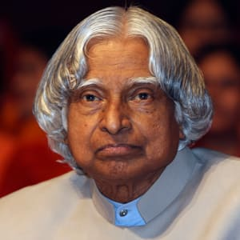

Dr. A.P.J. Abdul Kalam

"Missile Man"
Here's a time-line of his Life...
He lived as an example of hard work, resilience and positive attitude, and people remember him as the most
beloved president. He was known to be the “missle man” for his work on the development of science and
technology. These values of A P J Abdul Kalam are so inspirational and motivational.
- 1931 - Born in Rameswaram, Tamil Nadu.
- 1954 - Graduated in Physics from University of Madras.
- 1960 - Graduated in Aerospace Engineering from Madras Institute of Technology.
- 1961 - Joined DRDO as a scientist.
- 1969 - Joined Space Research at ISRO.
- 1980 - Became the project Director for India's First Indegenous Satellite Program
- 1980 - Was involved in the development of several Indegenous Missiles for India like Agni, Prithvi.
- 1981 - Awarded Padma Bhushan.
- 1990 - Awarded Padma Vibhushan.
- 1992 - Chief Advisor for the India's Nuclear Program.
- 1997 - Awarded Bharat Ratna.
- 2002 - Became 11th President of India.
- 2015 - The People's President passes away while doing what he loved the most, addressing students.
-what is the secret of success?
-Right decisions
-Right decisions
-How do you make right decisions?
-Experience
-Experience
-How do you gain experience?
-Wrong decisions
-Wrong decisions
-A.P.J. Abdul Kalam
For more related information visit wikipedia